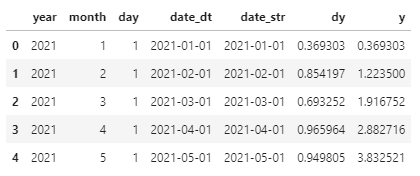
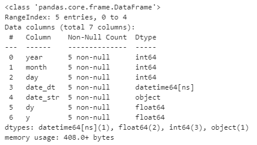
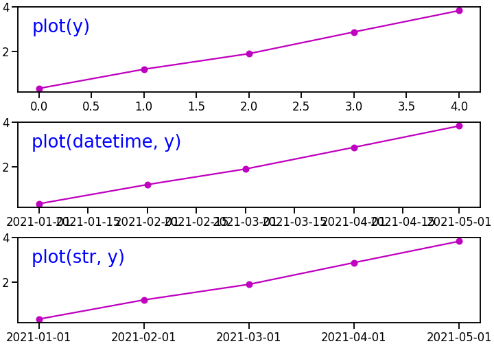
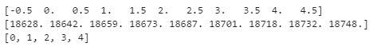
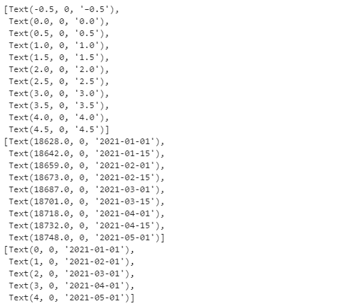
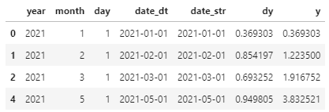
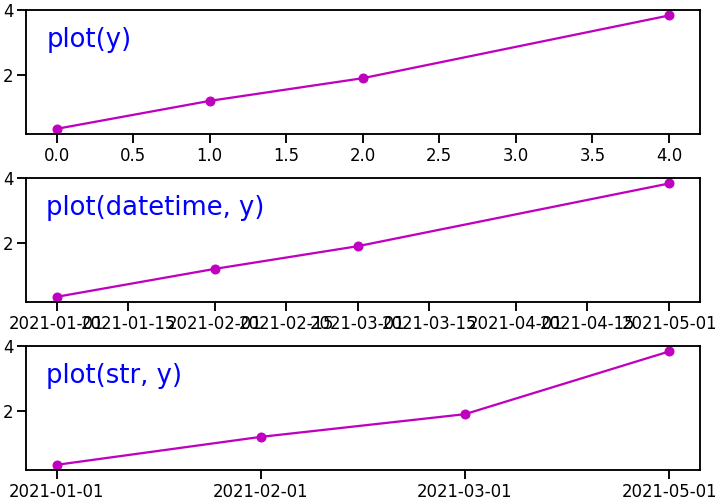
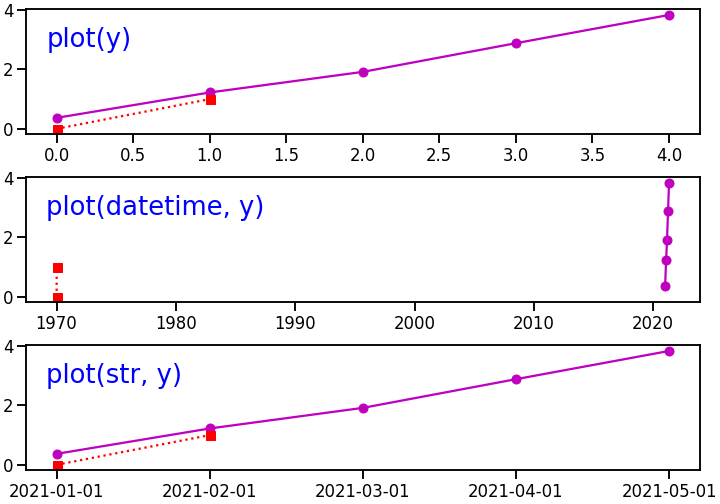
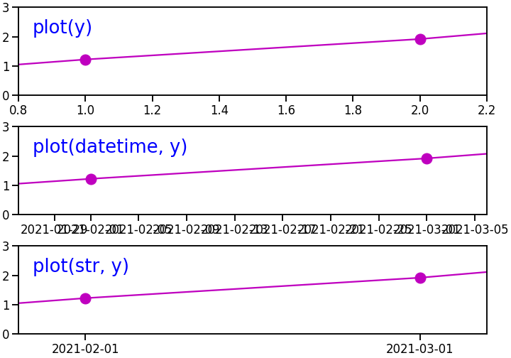

- 시계열 데이터를 다루면 x축에 날짜와 시간이 붙습니다.
- x축 데이터는 datetime 객체일 수도 있고, 그냥 string일 수도 있습니다.
- 여러 그림을 겹쳐 그릴 때 종종 문제가 됩니다. 원인과 해결책을 알아봅니다.
1. 예제 데이터
- 라이브러리 호출
1
2
3
4
5
6
7
8%matplotlib inline
# 라이브러리 호출
import numpy as np
import pandas as pd
import matplotlib.pyplot as plt
import seaborn as sns
sns.set_context("talk")
1.1. 데이터 생성
- datetime이 포함된 데이터를 만듭니다.
- 2021년 1월 1일부터 5월 1일까지 날짜데이터를 만들고,
- 랜덤하게 y 데이터를 생성합니다.
1
2
3
4
5
6
7
8
9
10
11
12
13
14# 데이터프레임 생성
df = pd.DataFrame({"year":[2021]*5,
"month":[i for i in range(1, 6)],
"day":[1] * 5})
# year, month, day로 datetime 생성
df["date_dt"] = pd.to_datetime(df)
# datetime을 string으로 변환
df["date_str"] = df["date_dt"].apply(lambda x: x.strftime("%Y-%m-%d"))
# random y 데이터 생성
df["dy"] = np.random.random(size=5)
df["y"] = df["dy"].cumsum()
1.2. 데이터 확인
생성한 데이터를 확인합니다.
1
df

의도한 대로 데이터가 생성되었습니다.
생성한 데이터의 타입을 확인합니다.
1
df.info()

date_dt와 date_str 컬럼은 같은 언뜻 보기에는 같은 데이터입니다.
하지만 데이터 타입이 datetime과 object(string)으로 다릅니다.
Matplotlib이 이 데이터들을 어떻게 다루는지 봅시다.
2. 데이터 시각화
2.1. 세 가지 방식
- 시간에 따른 y의 변화를 그리는데는 크게 3가지 방법이 있습니다.
1. plot(y) : y만 plot
2. plot(datetime, y) : datetime 형식 x, y plot
3. plot(str, y) : string 형식 x, y plot
세 가지 방식을 위에서부터 나란히 적용합니다.
1
2
3
4
5
6
7
8fig, axs = plt.subplots(nrows=3, figsize=(10, 7), constrained_layout=True)
axs[0].plot(df["y"], "mo-") # y data만 plot
axs[1].plot(df["date_dt"], df["y"], "mo-") # x data : datetime
axs[2].plot(df["date_str"], df["y"], "mo-") # x data : string
for ax, text in zip(axs, ["plot(y)", "plot(datetime, y)", "plot(str, y)"]):
ax.text(0.03, 0.7, text, fontsize="x-large", color="b", transform=ax.transAxes)
맨 위부터 차례로 세 가지 방식으로 그림을 그려 나열했습니다.
xticklabels라고 부르는 x축 눈금이 다릅니다.
1. plot(y) : index를 x축으로 사용합니다.
2. plot(datetime, y) : 데이터 사이 공간에도 날짜가 찍힙니다.
3. plot(str, y) : 데이터가 존재하는 지점에만 날짜가 찍힙니다.
2.2. xticks와 xticklabels의 정체
- x축 눈금은 두 가지로 이루어집니다.
- 눈금이 매겨지는 위치(xticks)와 눈금 레이블(xticklabels)입니다.
- 세 그림에서 xticks와 xticklabels를 확인합니다.
- xticks:
ax.get_xticks로 확인합니다.1
2for ax in axs:
print(ax.get_xticks())
1. plot(y) : 그림의 눈금 좌우로 두 개 (-0.5, 4.5)가 더 있습니다.
2. plot(datetime, y) : 데이터에 없는 숫자가 나열되어 있습니다.
3. plot(str, y) : 0부터 4까지의 정수가 기록되어 있습니다.
- xticks의 정체가 뭘까요? 확실하게 알지 않으면 고생할 듯 합니다.
xticklabels:
ax.get_xticklabels로 확인합니다.1
2
3
4from pprint import pprint
for ax in axs:
pprint(ax.get_xticklabels())
Text 객체가 나열되어 있습니다.
- Text 객체는 세 개의 데이터가 나열되어 있습니다.
- 첫번째는 xticks와 동일합니다.
- 두번째는 모두 0입니다.
- 세번째는 그림의 눈금에 찍힌 숫자입니다.
- Text 객체의 구성은 (x좌표, y좌표, text내용)입니다.
- 따라서 xticks의 정체는 눈금의 x좌표입니다.
- 세 그림에서 xticks가 다른데서 볼 수 있듯 plot 방식에 따라 x좌표가 다루어지는 방식이 달라집니다.
2.3. index가 하나 빠지면?
결측치 제거 등으로 index에 구멍이 뚫리는 일이 자주 있습니다.
index가 빠졌을 때 각기 어떤 일이 벌어지는지 살펴봅시다.
데이터에 구멍을 뚫습니다.
1
2df_drop = df.drop(3)
df_drop
index 3을 지웠기 때문에 0, 1, 2, 4만 남았습니다.
똑같은 코드로 그림을 그립니다.
1
2
3
4
5
6
7
8fig, axs = plt.subplots(nrows=3, figsize=(10, 7), constrained_layout=True)
axs[0].plot(df_drop["y"], "mo-") # y data만 plot
axs[1].plot(df_drop["date_dt"], df_drop["y"], "mo-") # x data : datetime
axs[2].plot(df_drop["date_str"], df_drop["y"], "mo-") # x data : string
for ax, text in zip(axs, ["plot(y)", "plot(datetime, y)", "plot(str, y)"]):
ax.text(0.03, 0.7, text, fontsize="x-large", color="b", transform=ax.transAxes)
세 결과가 완전히 다릅니다. :)
1.plot(y): 남아있는 index가 x축에 놓입니다.
2.plot(datetime, y): 남은 index에 대응되는 datetime이 놓입니다.
※ 비어 있는 2020-04-01를 건너 뛰고 그립니다.
3.plot(str, y): 0부터 4까지의 정수가 기록되어 있습니다.
※ 데이터를 건너뛰는 대신 균일하게 나열하기 때문에 4월이 빠진 것을 알기 어렵습니다.
2.4. 다른 데이터와 중첩
(0,0)-(1,1)을 잇는 짧은 직선을 겹쳐 그립니다.
1
2
3
4
5
6
7
8
9
10fig, axs = plt.subplots(nrows=3, figsize=(10, 7), constrained_layout=True)
axs[0].plot(df["y"], "mo-") # y data만 plot
axs[1].plot(df["date_dt"], df["y"], "mo-") # x data : datetime
axs[2].plot(df["date_str"], df["y"], "mo-") # x data : string
for ax, text in zip(axs, ["plot(y)", "plot(datetime, y)", "plot(str, y)"]):
ax.plot([0, 1], [0, 1], "rs:") # (0,0)~(1,1) 사이 직선
ax.text(0.03, 0.7, text, # text
fontsize="x-large", color="b", transform=ax.transAxes)
가운데 결과가 완전히 다릅니다. :)
1.plot(y): 자연스럽습니다. x축 눈금과 데이터가 일치합니다.
2.plot(datetime, y): 완전히 다른 곳에 놓입니다.
※ (0,0)이 1970년에 놓여 있습니다. 자주 하는 실수입니다. 조심해야 합니다.
3.plot(str, y): 맨 위와 동일하게 자연스럽습니다.
※ 다만, 빠진 데이터가 반영되지 않으니 사용하기 좋지 않습니다.
2.5. x축 범위 설정
데이터 중첩 문제는 x축 범위 설정에서 똑같이 등장합니다.
다른 방식의 범위를 비슷하게 맞춰봅니다.
1
2
3
4
5
6
7
8
9
10
11
12
13
14
15
16
17
18import datetime
fig, axs = plt.subplots(nrows=3, figsize=(10, 7), constrained_layout=True)
axs[0].plot(df["y"], "mo-", ms=15) # y data만 plot
axs[0].set_xlim(0.8, 2.2) # x 범위: index 기준
axs[1].plot(df["date_dt"], df["y"], "mo-", ms=15) # x data : datetime
axs[1].set_xlim(datetime.date(2021,1,26), # x 범위: datetime 기준
datetime.date(2021,3,6))
axs[2].plot(df["date_str"], df["y"], "mo-", ms=15) # x data : string
axs[2].set_xlim(0.8, 2.2) # x 범위: index 기준
for ax, text in zip(axs, ["plot(y)", "plot(datetime, y)", "plot(str, y)"]):
ax.set_ylim(0, 3)
ax.text(0.03, 0.7, text,
fontsize="x-large", color="b", transform=ax.transAxes)
xticks의 종류에 따라 처방이 다릅니다.
index 형식은 index에 맞는 범위를 넣어주고, datetime 형식은 datetime 모듈을 사용해 범위를 지정합니다.
1.plot(y): 표현 범위의 index에 적절한 여백을 넣습니다.
2.plot(datetime, y): datetime 모듈을 사용해서 범위에 날짜를 넣습니다.
3.plot(str, y): 1.과 동일합니다.